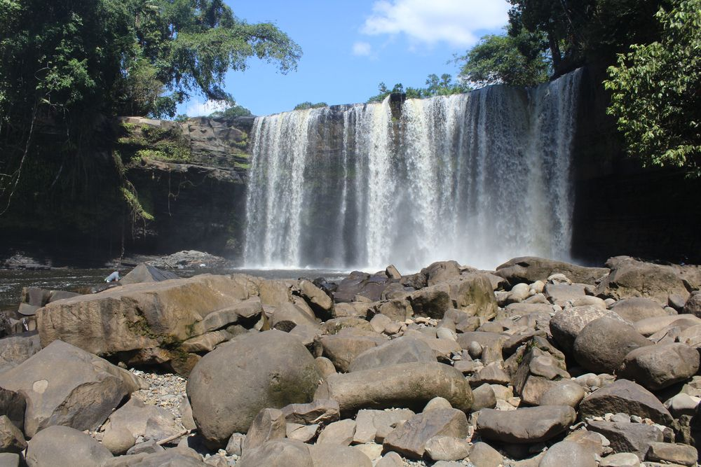
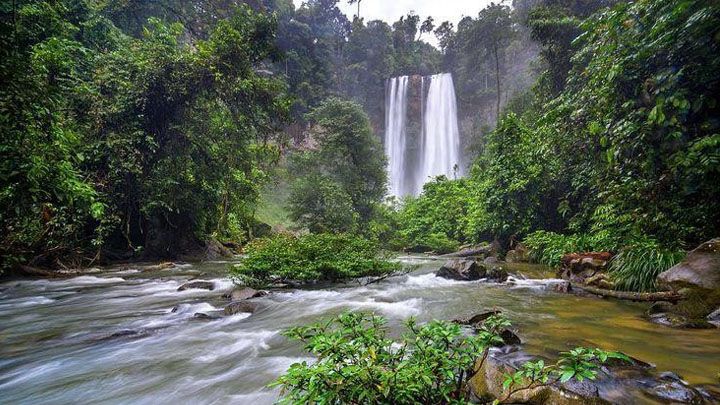

Kabupaten Bengkayang di Kalimantan Barat dikenal luas dengan julukan "Negeri Seribu Riam" karena memiliki keindahan alam dan air terjun yang sangat melimpah.
Riam Merasap merupakan salah satu destinasi ikonik di Bengkayang yang mirip dengan Niagara mini.

Sumber: Atourin - Air Terjun Riam Merasap
Riam Pangar menyajikan pemandangan air mengalir di antara bebatuan yang asri. Lokasi ini sangat populer bagi wisatawan yang ingin bermain air jernih, bersantai, maupun melakukan aktivitas arung jeram (rafting).

Sumber: Siti Mustiani - Wisata Riam Pangar
Riam Berawant merupakan salah satu air terjun tertinggi di Kabupaten Bengkayang dengan ketinggian mencapai lebih dari 50 meter. Dikelilingi oleh hutan tropis yang lebat, destinasi ini menyajikan suasana alam yang sangat sejuk dan alami.
